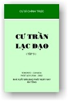

|
BuddhaSasana Home Page |
Vietnamese, with Unicode Times font |
|  |
Cư trần lạc đạo Tập 3 Cư
sĩ Chính Trực |
-ooOoo- Ðược chỗ không.
Không chỗ được. -ooOoo- Tâm thanh tịnh Ngày mai ai cũng chết Đóa hoa tươi Xin học hạnh của đất -ooOoo- Người không sương
gió khó thành công. -ooOoo- Lời Tựa Người tu học theo Phật thường băn khoăn không biết bắt đầu từ đâu, trước một rừng kinh sách của đạo Phật. Tập sách này trình bày các bước căn bản tu học theo Phật, có thể áp dụng trong đời sống hằng ngày, gồm có những bài viết đơn giản về Phật Pháp Tại Thế Gian, Cốt Tủy Của Ðạo Phật. Khi tu học theo Phật, chúng ta thường phát bốn nguyện lớn: - Một: "Chúng sanh vô biên thệ nguyện độ". Nghĩa là: có rất nhiều loại chúng sanh trong tâm thức, trong tư tưởng, gây nên các tâm niệm sanh diệt, lăng xăn lộn xộn, thương ghét thị phi, cần phải dẹp hết. - Hai: "Phiền não vô tận thệ nguyện đoạn". Nghĩa là: có rất nhiều loại phiền não trong tâm thức, trong tư tưởng, gây nên các tâm niệm sanh diệt, sanh tử luân hồi, cần phải đoạn trừ dứt sạch. - Ba: "Pháp môn vô lượng thệ nguyện học". Nghĩa là: có rất nhiều pháp môn, hay phương pháp tu tập, để đạt giác ngộ và giải thoát, chúng ta cần thực hành trong việc tu học theo Phật. - Bốn: "Phật đạo vô thượng thệ nguyện thành". Nghĩa là: thực hành trọn vẹn được ba điều thệ nguyện trên đây, con đường chuyển hóa tâm thức sanh diệt thành Chân Tâm Phật Tánh nhứt định được thành tựu viên mãn. Tất cả những lời thệ nguyện lớn trên đây đều qui về một chữ: "TÂM". Dù thực hành theo bất cứ tông phái nào, pháp môn nào, người tu học theo Phật chỉ có một mục đích cứu kính là: hàng phục tâm của mình và an trụ tâm của mình. Nhờ đó được an lạc và hạnh phúc. Nguyện chánh pháp được phổ biến, nguyện mọi người sống đời được vui đạo, cho nên bài viết trong các tập sách Cư Trần Lạc Ðạo được hoan hỷ cúng dường chư Phật Tử mười phương, để tùy nghi xử dụng đem lợi lạc cho mọi người, được phép trích dẫn, in lại, đăng báo, thu băng, phát thanh, từng bài hoặc toàn tập, để phổ biến dưới mọi hình thức, một cách bất vụ lợi. Kính chúc quí độc giả cư trần lạc đạo. Toronto, Mùa
Hạ An Cư Năm 2002 -ooOoo- Ðầu trang | Mục lục | 01 | 02 | 03 | 04 | 05 | 06 | 07 | 08 | 09 | 10 | 11 | 12 | 13 | 14 | 15 | 16 | 17 | 18 | 19 |
Chân thành cám ơn Cư sĩ Chính Trực đã gửi tặng bản vi tính (Bình Anson, 04-2002)
[Trở
về trang Thư Mục]
updated: 25-05-2002